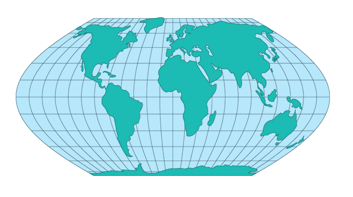

Meridians: Sine curves (60° segments).
Parallels: Unequally spaced straight lines.
Poles: Straight lines that are half the length of the Equator.
Symmetry: About the Equator and the central meridian.
The Wagner I projection is an equal-area projection. Its scale is constant along any parallel or pair of equidistant parallels. This projection is neither conformal nor equidistant.
This projection was described by Karlheinz Wagner, who described it in 1932. It was again described by V. V. Kavraisky in 1936 so it is also known as the Kavraisky VI projection.
*Usage information source:
"Kavraisky VI Projection." 18 May. 2005 http://www-ccs.ucsd.edu/matlab/toolbox/map/kavraiskyviprojection.html